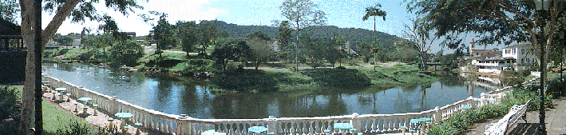
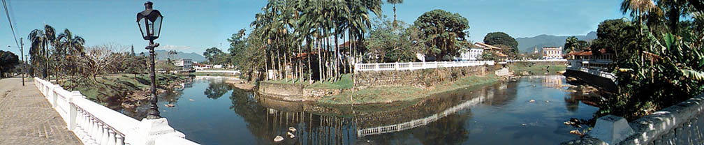
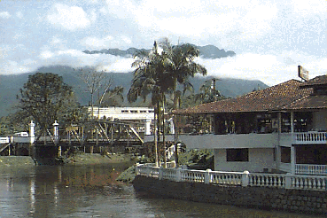
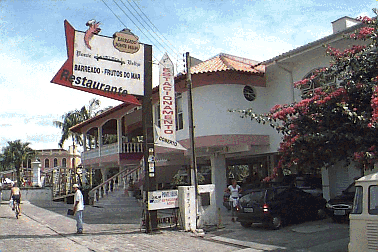

"CIDADE ONDE NASCEU
O AUTOR!" 
Foto 1 (Montagem de 5 fotos)

Foto 2(Montagem de 4 fotos)
"CIDADE DE MORRETES-PR-BRASIL"
Morretes é uma histórica cidade, no litoral paranaense, que servia de entreposto para as pessoas que viajavam de Paranaguá, pelo rio Nhundiaquara (Foto 1), até ao pé da Serra do Mar, no Porto de Cima, especificamente aos pés do pico do Marumbi (Foto 2) para, através do caminho dos jesuítas ou caminho do Itupava, alcançar o planalto, até a capital - Curitiba.
Nesta época, Morretes era um porto de parada, onde havia o abastecimento necessário para a última etapa da viagem, e os barcos aportavam exatamente nesta área onde hoje tem uma mureta branca de balaústres que, na foto, onde interrompe a mureta, ainda existe a escadaria que dava acesso ao que era o mercado municipal (o prédio existe até hoje).
A paisagem, graciosa e bela, conforme pode ser visto, já foi reproduzida por inúmeros artistas plásticos, tais como Theodoro De Bona, Silveira Neto, Lange de Morretes, Trombini, Stopinski, Karin, Marlise, Eros, Edma e o próprio autor desta página, naturais da própria cidade e artistas plásticos de outras cidades, tais como Stelke, Krüger, que também se encantaram com a sua beleza.

Foto 2
Morretes é uma cidade previlegiada.
Além da beleza natural, existe um povo hospitaleiro e amigo. Basta entrar em um dos restaurantes existentes na cidade para comprovar isto. Comida deliciosa e atendimento impecável.
O BARREADO, um prato típico da região litorânea, e os frutos do mar, satisfazem qualquer paladar exigente. Este autor teve a grata satisfação de experimentar estas iguarias as quais exalto em cometários elogiosos.
Os restaurantes estão construídos a beira do rio Nhundiaquara. (Foto 2 e Foto 3)
Com paisagens maravilhosas, o sabor dos alimentos ficam ainda melhor.

Foto 3 (02/04/1999)
O BARREADO, é um prato preparado com carne, toucinho e temperos.
O caminho do Itupava trazia os tropeiros serra abaixo, quando negociavam erva-mate com o litoral. O barreado era a comida preferida por eles, pois não se deteriorava facilmente, e como a caminhada durava cerca de 15 dias, era o prato ideal para tal empreitada. Normalmente esta refeição era servida no final do dia. Comida feita com carnes gordurosas, era temperada principalmente com o louro, por ser muito digestivo. Para preparar o prato, escalda-se a farinha de mandioca junto com o caldo grosso da carne, que forma um pirão muito gostoso. Os ingredientes são fervidos por muitas horas, em uma panela de barro que era "barreada" - com uma folha de bananeira aquecida para ficar flexível e depois amarrada na boca da panela de barro, então a tampa era colocada e fechada com um pirão de farinha de mandioca misturada com cinza e água.
| VOLTAR | LIVRO 1 | LIVRO 2 | MORRETES |
| COLÉGIO | XVIII FESTA FEIRA |